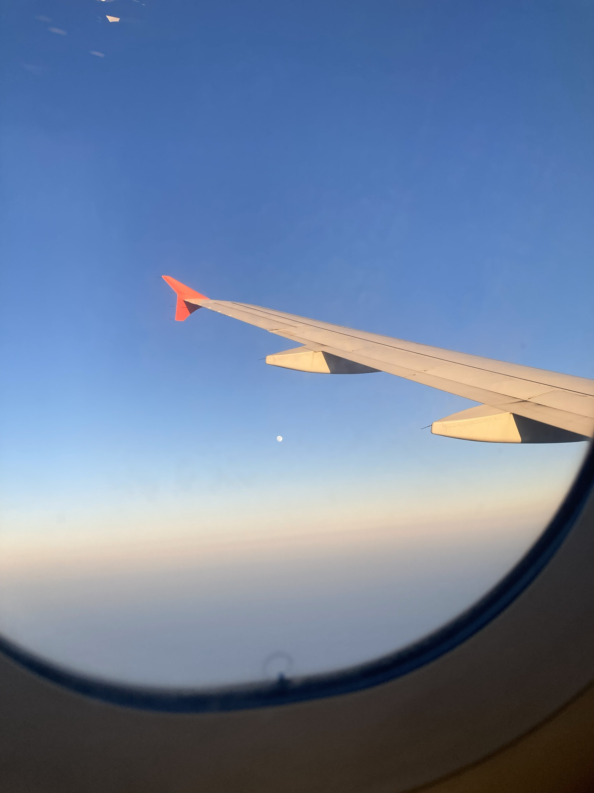
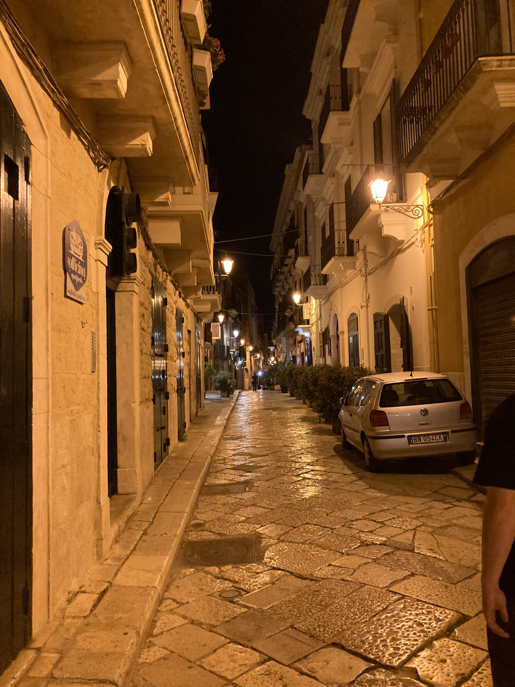
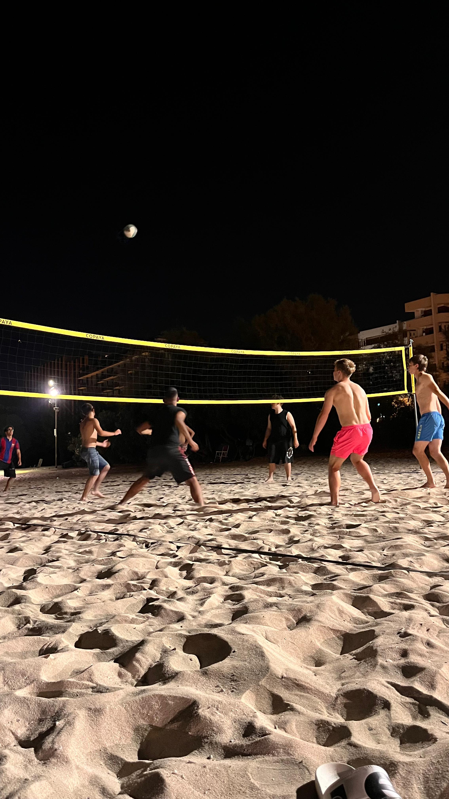
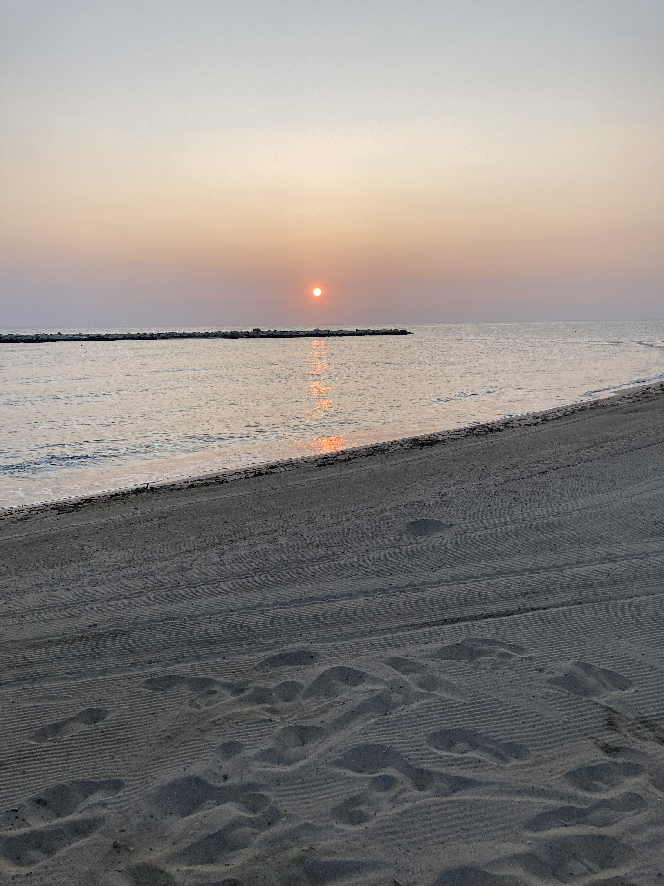
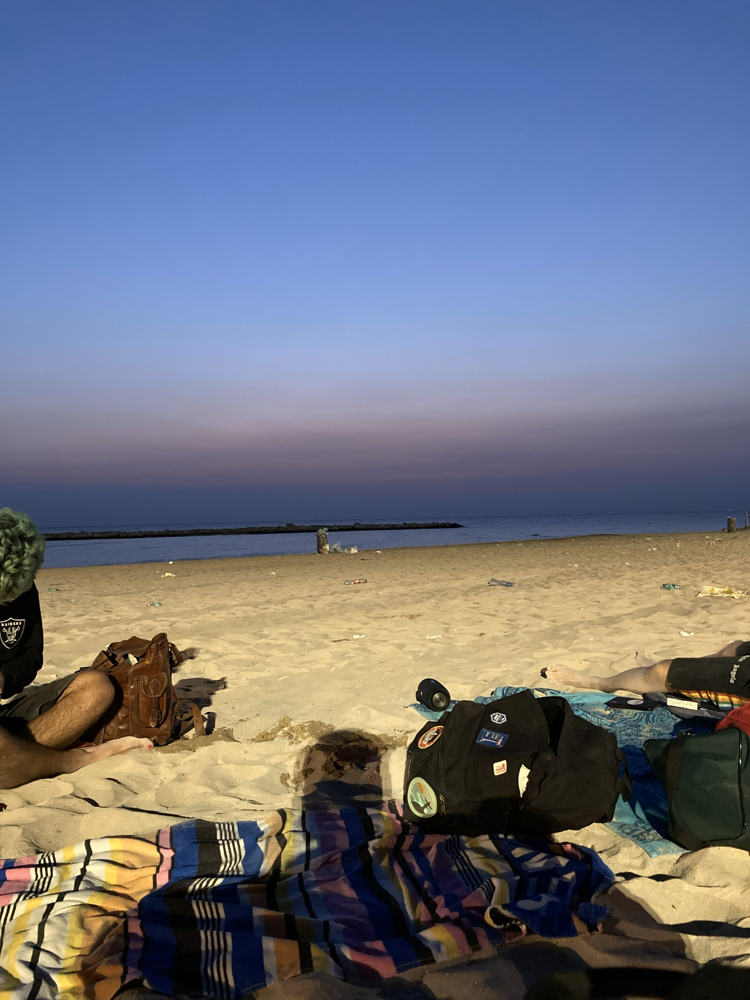
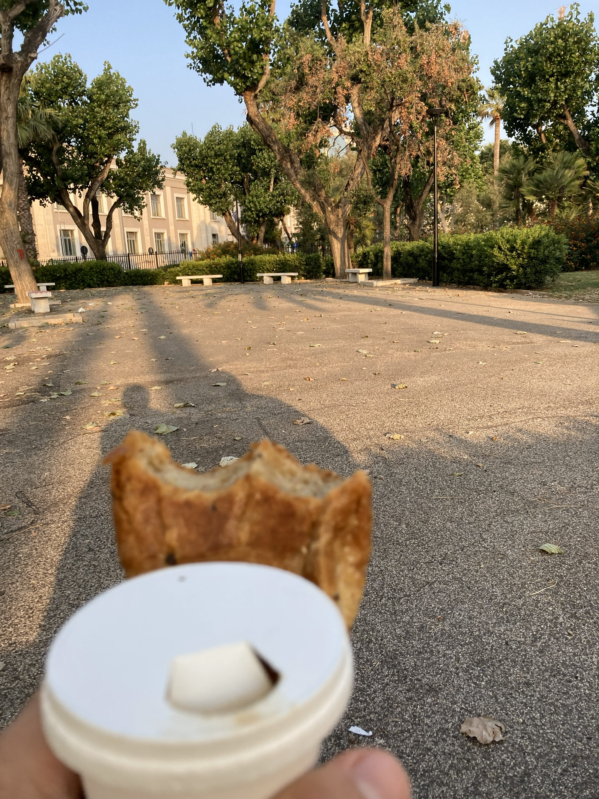
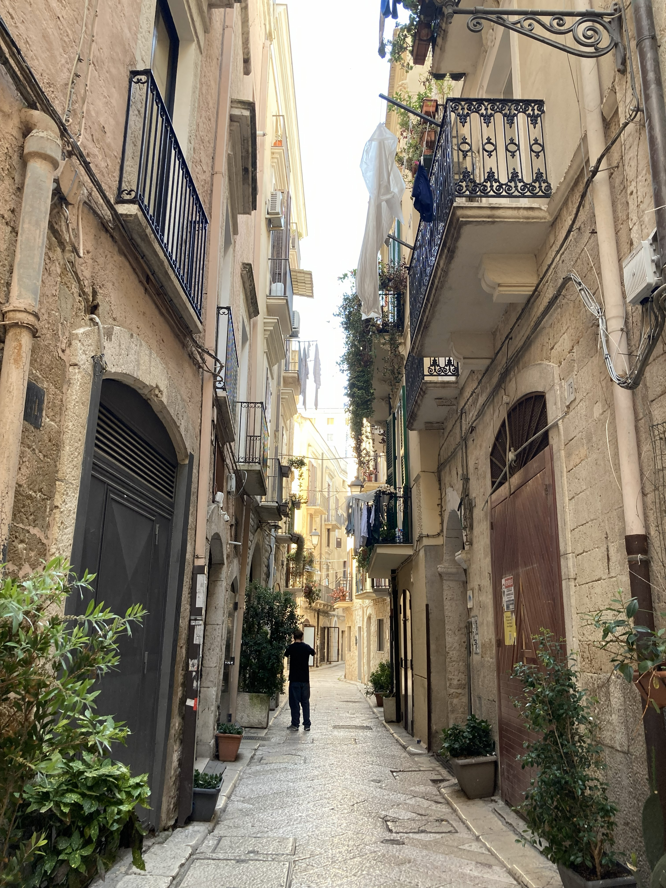
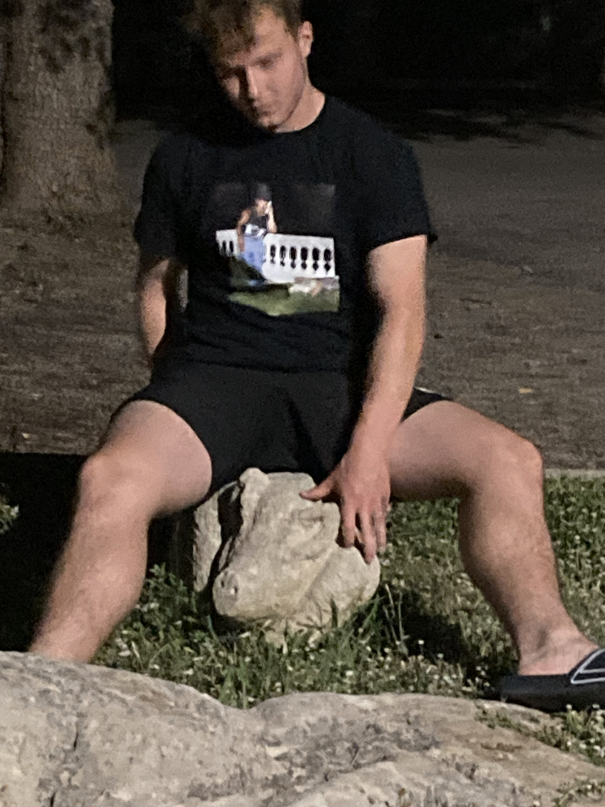
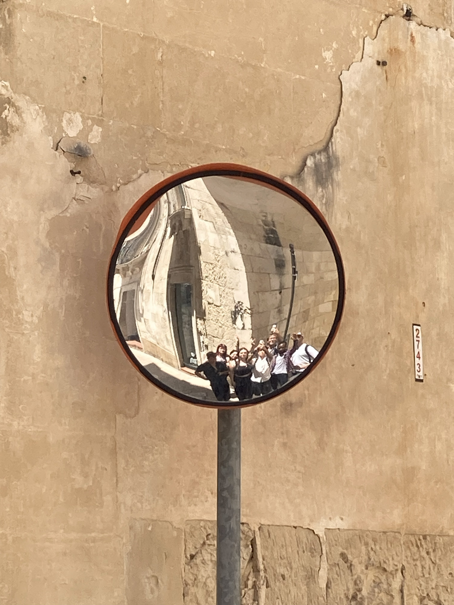
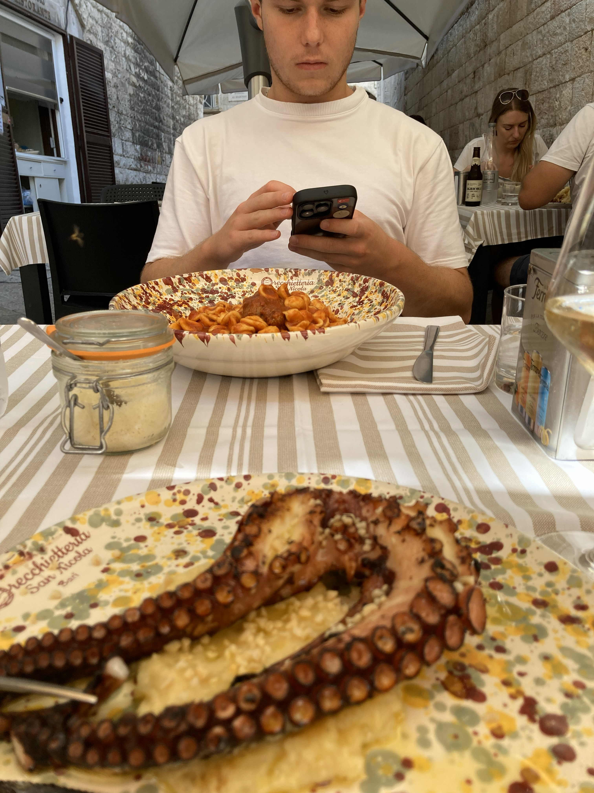

Lecce Trip
December 21, 2025
Another erasmus with Filip, but now further away and our first time flying. No exact plan, only thing we booked were our flight tickets and lets go to Italy!
We take off, look at eachother in joy and suck in our asscheecks during every turbulance. Bari is very nice city except the piss smelling streets which made us felt uhhh, safe.
We left our bags at friends airbnb and went for an Italian dinner. I don't how and why but we ended up in McDonalds, the perfect place for pasta and some seafood.
We take our cheeseburger pizzas out to the now cleaned golden streets and eat our midnight food right in front of the opera house, museum or something that is here longer than dinosaurs.


I didn't mention that me and filip, we didn't have place to stay overnight.
As the most experienced travellers and enthusiastic explorers of the unexpected we decided to spent night in the city enjoy and try to not get robbed.
My phone rang, it was text from our belongings keepers, "come to the beach there are people playing voleyball",
bought some water and then right under the net. It was strange place, it was combination of so-called park, beach and garbage.
First round of good serves earned us beers from our italian co-voleyballers. After another round we were left on the beach alone, only me, Filip and Italians.
Rotations and during time-breaks we drank Jegerbombs and more Peroni. Although voleyball is life it gets boring after 4 hours.
Net packed and we were thinnking that now we will be left here alone. We were wrong, when guys started to move garbage bins to create artificial goals and joint started passing by
we knew fun wasn't over yet. We played, easy, hard, drunk, high, noone knew how long and there wasn't anyone who would care about time.
Feet scratched from garbage in the sand but mainly bottle caps, calves so tense from whole night of olympic games,
we finaly sat down. Light was slowly dragging from under the sea horizont and we were quikly getting cold.
Sitting there with bunch of half strangers, tired as hell watching sunrise I felt content. It was like prayer or meditating state, gratitude was
filling your head and the sole feeling of conscioucusnes in that moment was magical.
As if it wasn't enough we went to swim in the sea.
Sun still wasn't completely above the water, as we were stripping down we were shaking from cold but we wanted to experience this so so mutch.
There was a little rock island about 50 meters from the shore, we swum/walked through the bay only rule was to keep body in the water, it was warmer than the air,
stood up on the rocks and enjoyed. The sunrise, and the moment.


After we came back and picked up our things our parths parted away. Saying goodbye was never my strong suit, plus being awake for 20 hours now didn't help it much either.
We exchanged contacts and as it goes promised each other that we will meet again.
So again it's only me and Filip crusining through the Bari to wait for baggagekeepers to wake up.
Using only three Italian words I knew and last pieces of consciousness left in us. We managed to buy coffe and croissant at nearby shop. Looking like aliens to these fine people, maybe because our shower
was sea and we brushed our teeth at public fountain, we managed to get to city center. I think during this hour long journey we had 3 cofees. While waiting for Filip in front of the McDonalds to finish
his shitparty I tried to make contact with Italia people. But after unsuccesfull attempt with slower chief and language barrier we realized that we should go sightseeing and explore the city bit more.

Time is slow, our brains even slower and only tour guide we can understand here is google maps. Crusing through the narrow streets we found a BENCH! Quiet neighbourhood, quite dark, temperature exactly between nap time and siesta. As soon as we sat/layed down Filip fell asleep and me, I don't know what my head was thinking but I was watchdog with 10 second breaks of falling asleep. The whole time I was trying to make eye contact with a grandma looking at us from the balcony. Only thing what I was trying to think of for the whole time we were there was how to say senorita.

Alarm rung and we had to pick up our lugagge. Filip got his beauty 30 minutes sleep and I was happy because I protected him so well during that time.
With a stop in coffee shop we headed to the trainstation, the place which would lead us to the sweet soft beds. Only problem, we still needed to wait for a
train about three hours. Roleplaying homeless we layed against steel pole and slept. It was safe policemen circled around us. No one woke us up, that was
strange.
We took train, got to the erasmus place had a dinner, during which people around us were telling us to go to sleep because we looked and acted like zombies.
Even falling asleep was hard after so much time awake, but the first accomplishment of this erasmus was done, 38 hours awake. Italian coffe tasted and lets
get ready for tomorrow.

This is exactly how our brains felt the next day, although we slept 10 hours nothing was good. Mood for socialising was really low but at least we stopped bitching
compared to the previous evening.
Things got funny. New place new manners but toilet without toilet seat? Thats quite strange. Week went ont you know how erasmus works, you learn something, step out of your
comfort zone, socialise, make some love affairs, for one I went to Lisbon just to understand that it won't work (hopeless romantic), visit the city, grab drinks,
enjoy life, meditate in nature, run in the sun... Nevertheless, the most interesting thing during this training was our vegetarian diet. We knew about it before,
we were scared, because we had never lived without the meat longer than a dinner. We were lucky, chef was living god and the food was great but our digestive pipes
they thought otherwise. We really quickly understood how to use bidet after those tsunamis of shit on the toilet.


Pulpo I remeber that name very, very good, because looking for it in menus through all the bari and Lecce is quite a quest. Finally we found a place. First time
seafood and meat after a week. It was great even god forbided my sins because I gave apple to a beggar.
Back to Slovakia, we didn't want to go. When we heard our home language at the airport we looked more traumatized than happy going home. It wasn't comfortable
but great experience which will stay in our hearts.